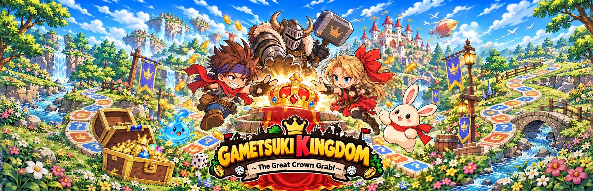

Every turn brings a choice
Travel the board and discover rewards and challenges along the way. See work-in-progress gameplay in the trailer.

FANTASY • BOARD GAME • PARTY
Board-game strategy meets a fantasy RPG adventure. A competitive board and party game in development by ZAKU ZAKU GAMES.
Planned release: March 2, 2027
In development for Steam / Windows
The Steam store page is being prepared. A link will be added after it goes live.
THE GAME
Roll the dice, travel the board, and discover treasure, battles, and unexpected events. A colorful cast competes for the crown in a fantasy kingdom.
Travel the board and discover rewards and challenges along the way. See work-in-progress gameplay in the trailer.
Designed for up to four players, with CPU players planned. Player counts and connection options will be finalized after implementation and testing.
A prologue and six story chapters are in development, alongside character encounters and varied events, including a casino.
TRAILER & GALLERY
All footage and images show a game in development. Content and features are subject to change.
Official trailer v21 · English · 63 sec · 720p
Opening movie · English · 1080p
Loading the player connects to YouTube. Playback quality can be changed in the player settings.
PRESS KIT
Find game information and promotional assets in one place. Download logos, key art, and stills captured from the approved trailer.
Opens the video in a new tab. Use the video menu to save it.
Fact sheet (text) ↓Images and video are provided for coverage of the game. No game source code or playable build is included.
INDEPENDENT GAME DEVELOPMENT
ZAKU ZAKU GAMES is an independent, individual game-development brand creating Gametsuki Kingdom. For press coverage, creator inquiries, and game features, contact our press email.
zakuzakugames.press@gmail.com